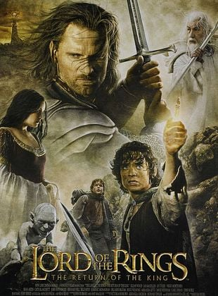

Yüzüklerin Efendisi: Kralın Dönüşü, Tek Yüzük'ün yok edilmesi için verilen mücadeleyi konu ediyor. Sauron'un orduları büyüdükçe büyümektedirler. Frodo ve onun can dostu Sam, korku dolu bir yolculuğun göbeğinde, korkunç Mordor'a adım adım yaklaşmaktadırlar. Tek yüzük yok edilmelidir ve iyilik bunun için savaşmaya hazırdır. Arka planda ise insan, elf ve cüce orduları, karanlık güçlerin karşısında tüm eski düşmanlıklarına rağmen bir araya gelmişlerdir. Hepsi birden küçücük bir Hobbit'in eline ve onun yeteneklerine bakmaktadırlar. Orta Dünya'nın kaderi belli olmak üzeredir. Ancak Tek Yüzük'ü sahiplenmek, kimi zaman taşıyanına daha cazip gelebilir.
| Yönetmen | Peter Jackson |
|---|---|
| Oyuncular | Elijah Wood, Viggo Mortensen, Ian McKellen |
| IMDb Puanı | 9.0 |